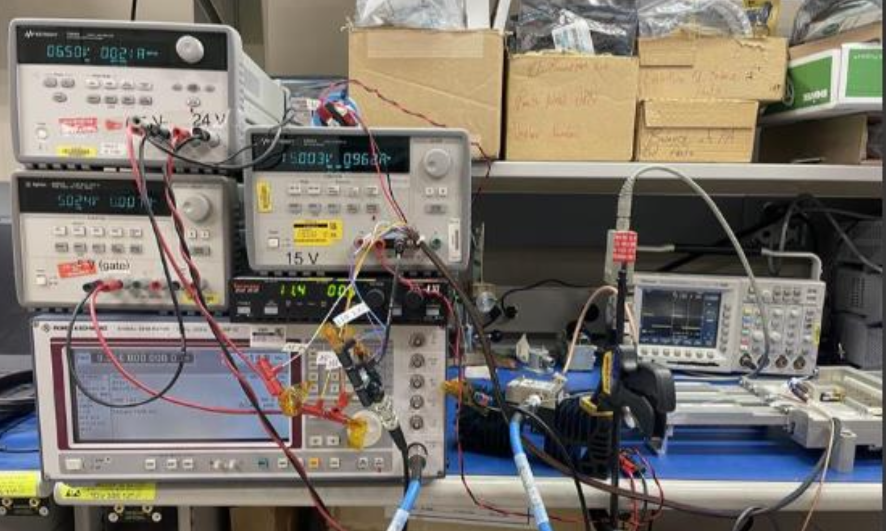
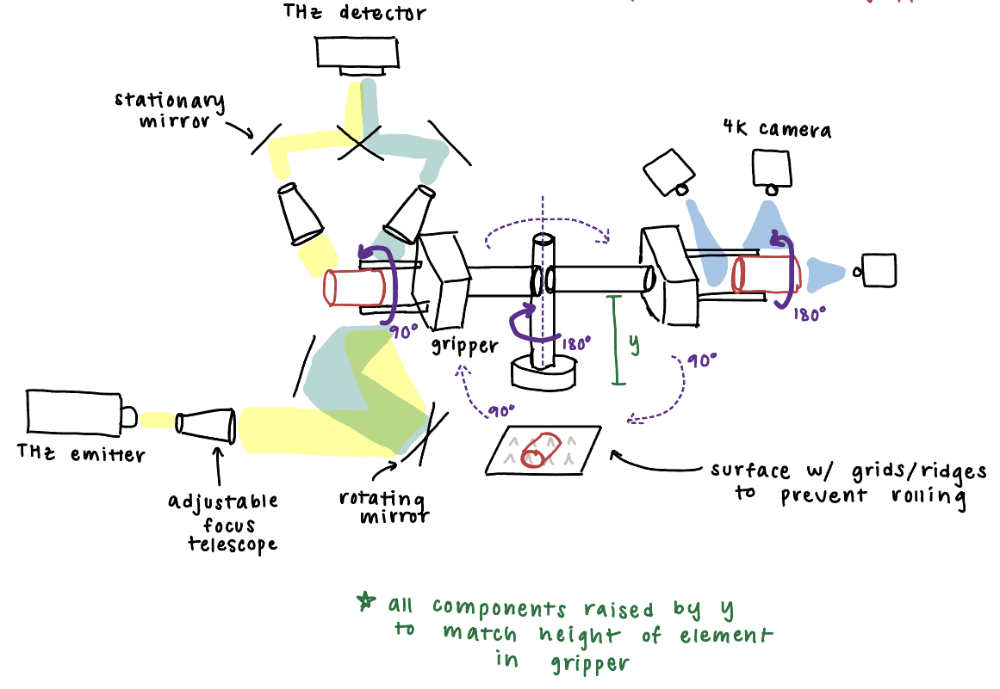

Honeywell Aerospace Technologies

The summer after my junior year, I worked at Honeywell Aerospace as an Electrical Engineering Intern, where I contributed to the redesign of the TR-1 weather radar. The TR-1 is a legacy airborne weather radar system that Honeywell is modernizing to improve performance and manufacturability, and my role focused on the transmitter/receiver module—the heart of the system responsible for generating and amplifying the RF signals that drive the radar. Because the performance of the transmit chain directly determines detection accuracy and reliability, validating and optimizing its design was a critical part of the project.

I led RF test setup and waveguide fixture assembly to support transmit/receive module validation. This involved designing and assembling test fixtures, integrating waveguide components, and ensuring stable and repeatable measurement conditions in the lab. Much of my time was spent troubleshooting and optimizing the power amplifier, which is the most crucial component in the chain. Alongside this work, I programmed and controlled digital potentiometers used to fine-tune amplifier biasing, which gave me hands-on experience bridging hardware and software in a high-frequency system.
I also used ANSYS HFSS simulations to improve the performance of waveguide transitions and rotary joints on the drive antenna. These joints must reliably pass high-power RF signals while rotating during operation, making them particularly sensitive to design tolerances and vendor part variations. Through careful modeling and parameter sweeps, I optimized designs to improve return loss and reduce the risk of mismatch across frequency bands. This work not only improved efficiency but also increased the robustness of the design against manufacturing variability—an important consideration in aerospace applications.

This internship gave me the chance to bridge theory and practice in RF and microwave engineering. I strengthened my skills in high-frequency test and measurement, electromagnetic simulation, programmable hardware, and waveguide component design, while also learning how to integrate electrical, mechanical, and manufacturing considerations into a single system. Most importantly, I gained experience working in an industry environment where performance margins are tight and reliability is paramount, preparing me for future roles at the intersection of RF engineering and systems integration.
Intellisense Systems Inc.
The summer after my sophomore year, I worked at Intellisense Systems Inc. as an R&D Engineering Intern, where I helped design a nondestructive, automated inspection system for bearings. During development, bearing elements are prone to scratches, scuffs, and even holes. The existing inspection system for these elements was manual. In order to reduce cost, inspection time, and labor-intensive testing, Intellisense was in the early stages of developing a solution to detect surface flaws and interior voids in bearing elements of different shapes and sizes using visible band and terahertz (THz) imaging. My role was to assist on the component-level and whole system design.

I originally conceptualized, designed, and prototyped a tray to hold various shapes and sizes of bearings, ensuring the tray aligned with the optical imaging constraints. This involved deep research and understanding of the imaging technology and material properties of the bearings. I also contributed to the design of the entire optomechanical system which, after rapid design iterations and prototyping, ended up being a robotic configuration. I designed linear and rotary stages, multiple-axis robotic arms, and robotic gripper configurations to hold the various-sized bearings. I performed cost and complexity analyses on multiple robotic system configurations, ensuring that all sizes and shapes of bearings could be imaged. This consisted of complex SolidWorks design, a detailed CAD assembly, and modeling of motion. I also helped the team research and get quotes for off the shelf robotic solutions. I also designed, rapid prototyped, and constructed mounting and bracketing solutions for various imaging technology within this system. Additionally, I also designed an adjustable focus telescope, consisting of collimating lenses, for the THz imaging.
I gained a multitude of technical skills in this internship, from more experience in Solidworks to large system mechanical design and robotics. I also left this internship with a deeper understanding of how to succeed in an R&D environment, gaining firsthand experience in iterative design and learning how to engage in productive, technical design conversations.